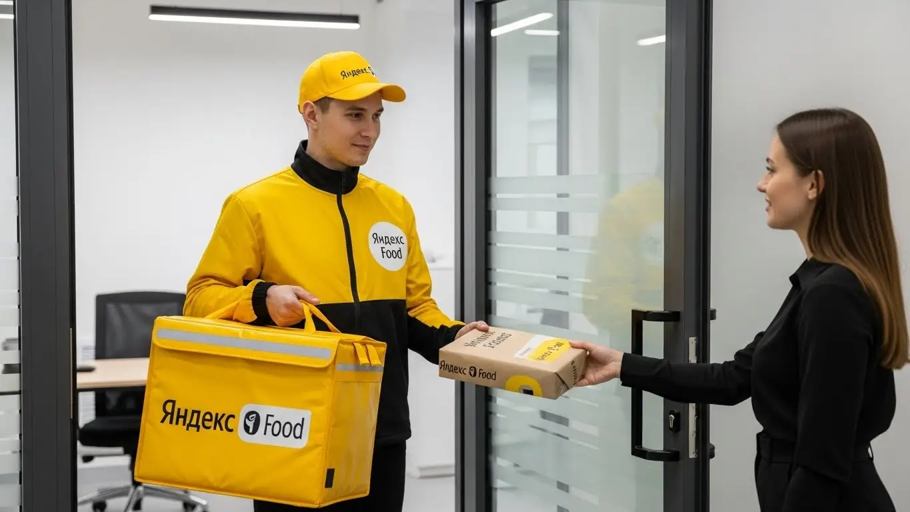

Работа курьером Яндекс Еды в Бронницах 2025-2026: доход и условия
- Работа курьером Яндекс Еды в Бронницах: для кого эта вакансия и что вы получите
- Сколько вы будете зарабатывать курьером в Бронницах: калькулятор дохода и разбор выплат
- Реальный заработок курьера в Бронницах: смены и месячный доход
- График работы и форматы занятости
- Требования к кандидату и документы
- Самозанятость, налоги и юридическая чистота
- Пошаговое оформление и первый выход на линию в Бронницах
- Пешком, на вело или на авто: что выгоднее в Бронницах
- Районы, маршруты и «топовые» зоны заказов в Бронницах
- Безопасность, страховка, штрафы и оплата простоя
- Плюсы и возможные минусы работы курьером в Бронницах
- Реальные истории и отзывы курьеров из Бронниц
- Ответы на главные вопросы о работе курьером Яндекс Еды в Бронницах
- Короткие ответы на главные вопросы
- Итоги и ваш следующий шаг
Все города
Здорово, будущий коллега! Тоже присматриваешься к жёлтой сумке и думаешь, что работа курьером Яндекс Еды в Бронницах — это лёгкие деньги? Сразу скажу: и да, и нет. Все видят свободный график, но мало кто заранее думает о пробках на выезде на Новорязанку, о «пустых» часах в спальных районах или о том, как быстро убивается подвеска машины или цепь велосипеда на наших дорогах. Это не Москва с её бешеным потоком, здесь свои правила игры, и я расскажу тебе о них без прикрас.
Поверь, 9 из 10 новичков в Бронницах наступают на одни и те же грабли: катаются впустую, не понимают, где и когда есть спрос, и в итоге разочаровываются, видя в приложении совсем не те цифры, на которые рассчитывали. Заработок — это не просто цена заказа. Это минус бензин, минус налог для самозанятого, минус амортизация. Это твой рейтинг, который напрямую влияет на то, какие заказы тебе даст система. Не зная, где концентрируются рестораны и в каких микрорайонах вечером ждут доставку, ты будешь просто жечь топливо и время. Если хочешь сразу ознакомиться с ключевыми условиями, посмотреть калькулятор дохода и подать заявку, вся информация про работу курьером Яндекс Еда в Бронницах собрана на отдельной странице.
В этом гиде мы всё разложим по полочкам. Мы честно посчитаем, сколько реально можно заработать в Бронницах пешком, на велике или на авто в 2025-2026 годах. Я покажу на карте самые «хлебные» зоны и часы пик. Разберём, как погода и сезонность влияют на доход, за что на самом деле прилетают штрафы и как их избежать. И главное — выясним, стоит ли игра свеч именно в нашем городе, или есть альтернативы.
Меня зовут Алексей. Я сам не один год откатал с коробом за спиной по Бронницам, а сейчас у меня свой небольшой таксопарк-партнёр. Я видел эту кухню со всех сторон — и как курьер, и как тот, кто помогает ребятам выходить на линию. Так что никакой рекламной шелухи от Яндекса тут не будет, только мясо, только реальный опыт. Ну что, погнали? Сейчас всё разложу по полочкам.
Прежде чем нырять в детали, давай быстро пробежимся по ключевым моментам в формате короткого гида. Так ты сразу поймёшь, на что обратить внимание.
Что ты точно узнаешь из этого разбора
В этой статье ты ТОЧНО узнаешь:
- Сколько реально можно заработать в Бронницах за смену, если работать пешком, на велосипеде или на авто?
- В каких районах Бронниц больше всего заказов и как ловить «фиолетовые зоны» с повышенной оплатой?
- За что на самом деле снижают рейтинг или штрафуют и как новичку избежать блокировки?
- Что выгоднее выбрать для Бронниц — доставку пешком, на велосипеде или на своей машине?
- Насколько сложно оформить самозанятость и как быстро можно выйти на первую смену после заявки?
А если тебе некогда читать всю статью — переходи сразу к заключению, где ты найдёшь короткие ответы на все эти вопросы и указания, в каких разделах искать подробности.
А чтобы было нагляднее, вот основные цифры и факты о работе в Бронницах в одной картинке.
Работа курьером в Бронницах в цифрах

Работа курьером Яндекс Еды в Бронницах: для кого эта вакансия и что вы получите
Давай начистоту: работа курьером — это не просто беготня с термокоробом. В Бронницах это реальная возможность получить живые деньги здесь и сейчас благодаря ежедневным выплатам и свободному графику, без начальников над душой. Эта вакансия подходит очень разным людям, и для каждого найдётся свой резон. Главное — понять, как система работает, и использовать её в свою пользу.
Кому подойдёт эта работа в Бронницах
Я видел много ребят, которые приходили в эту сферу. Кто-то оставался надолго, кто-то уходил, но успешнее всего дела шли у определённых категорий людей. Во-первых, это студенты. Гибкий график позволяет легко совмещать смены с учёбой — можно выходить на пару часов между парами или по вечерам. Во-вторых, это те, кому нужна подработка. Если у тебя есть основная работа, но денег не хватает, несколько вечерних смен или работа в выходные могут принести ощутимую прибавку к семейному бюджету.
Эта работа — отличный старт для тех, у кого нет опыта. Здесь не требуют резюме и рекомендаций, всему научат за пару часов онлайн. Также это хороший вариант для водителей, которые хотят, чтобы их автомобиль приносил доход, но не готовы возить пассажиров в такси. И, конечно, это работа для всех, кому важны быстрые и ежедневные выплаты. Заработал сегодня — получил деньги сегодня. В наше время это весомый аргумент.
Главные преимущества для жителей микрорайона Марьинский, центра города, поселка Горка
Самый большой плюс работы в таком компактном городе, как Бронницы, — возможность работать буквально в двух шагах от дома. Тебе не нужно тратить час на дорогу до «офиса». Через приложение «Яндекс Про» ты сам выбираешь зону, в которой хочешь выполнять заказы. Живёшь, например, в микрорайоне Марьинский — можешь брать заказы из местных магазинов и кафе, доставляя их по своему же району.
То же самое касается и центра города в районе улицы Советской. Там всегда много заведений, а значит, и заказов. Если ты живёшь рядом, можешь выходить на короткие, но прибыльные смены в обеденное время. Даже если твой дом в районе поселка Горка, ты можешь выбрать ближайшую к тебе зону и работать там, не мотаясь через весь город. Это экономит не только время, но и деньги на проезд или бензин.
Краткое обещание по доходу и условиям
Если говорить о том, сколько зарабатывает курьер, то в Бронницах цифры вполне достойные. При частичной занятости, выходя на 3–4 часа в день, можно спокойно получать 1000–1800 рублей. Если же рассматривать это как основную работу и уделять ей 8–10 часов, то доход курьера на автомобиле может доходить до 3500–4000 рублей за смену. В месяц при полной занятости вполне реально выходить на 60 000–80 000 рублей, особенно если работать на машине и брать дальние заказы.
Ключевые условия работы просты и прозрачны: свободный график, который ты составляешь сам, и ежедневные выплаты на карту. Опыт не требуется — всему научат. Ты просто устанавливаешь приложение, проходишь короткое обучение и можешь выходить на линию. Никакой бюрократии и долгих собеседований.
Из практики: у меня в парке есть парень, Сергей, работает на местном заводе посменно. Он взял в кредит машину. Чтобы быстрее его закрыть, после своей смены он на 3-4 часа выходит на линию как водитель-курьер Яндекс Еды на своем авто. Катается по центру и ближайшим посёлкам. Говорит, что за вечер спокойно делает 1500-2000 рублей «чистыми». За месяц набегает приличная сумма, которая почти полностью покрывает платёж по кредиту. Он не перерабатывает, но использует своё свободное время и машину с умом.
Вывод: Работа курьером в Бронницах — это гибкий инструмент для заработка, который подходит и студентам, и в качестве подработки. Главные фишки — работа рядом с домом и быстрые деньги без лишних сложностей. Мой совет: если сомневаешься, попробуй начать со своего района. Так ты быстрее освоишься и поймёшь, твоё это или нет, не тратя лишних сил.
Сколько вы будете зарабатывать курьером в Бронницах: калькулятор дохода и разбор выплат
Один из самых частых вопросов, который мне задают новички: «Алексей, сколько я точно буду получать?». Точного ответа, как в офисе с окладом, здесь нет. Твой заработок — это конструктор, который ты собираешь сам. Он зависит от того, как, когда и на чём ты работаешь. Давай разберём по косточкам, из чего складывается итоговая сумма.
Из чего складывается доход курьера
Твой заработок за смену формируется из нескольких частей, и важно понимать каждую из них.
- Оплата за заказ. Это базовая сумма за то, что ты принял заказ, забрал его из точки А и доставил в точку Б.
- Доплата за расстояние. Чем дальше ехать или идти до клиента, тем больше доплатят. Система считает каждый километр пути.
- Повышающие коэффициенты. Это самое интересное. В часы пик (обед, ужин), в выходные или в плохую погоду спрос на доставку растёт. В приложении «Яндекс Про» такие зоны подсвечиваются фиолетовым цветом, и стоимость каждого заказа в них умножается на коэффициент. Именно на них можно сорвать основной куш.
- Бонусы. Сервис часто ставит персональные цели. Например, «выполни 15 заказов за день и получи бонус 500 рублей». Это отличная мотивация.
- Чаевые. Всё, что клиент оставляет в качестве чаевых через приложение, идёт тебе в карман до копейки.
- Оплата простоя. Важный момент. Если ты пришёл в ресторан, а заказ ещё не готов, после 10 минут ожидания система начинает платить тебе за простой. Ты не теряешь деньги из-за медлительности кухни.
- Компенсация проезда. Если пешему курьеру выпадает очень дальний заказ, сервис может предложить компенсацию за проезд на общественном транспорте.
Как пользоваться калькулятором дохода
Чтобы ты мог прикинуть свой потенциальный заработок, на сайте есть специальный калькулятор. Пользоваться им элементарно. Сначала выбираешь свой город — Бронницы. Затем указываешь тип доставки: пеший курьер, на велосипеде или на своём авто. После этого выставляешь, сколько часов в день и сколько дней в неделю планируешь работать.
Прикинь свой доход в Бронницах
* Расчёт основан на средней ставке для г. Бронницы и не учитывает бонусы, чаевые и повышенные коэффициенты. Ваш реальный доход может отличаться.
Этот калькулятор дает хорошее представление о цифрах. А если хочешь увидеть полные условия, прочитать ответы на другие вопросы и сразу подать заявку, загляни на страницу про работу курьером Яндекс Еда в твоём городе — там всё собрано в одном месте.
На выходе калькулятор покажет примерный диапазон твоего дохода за день и за месяц. Важно понимать, что это прогноз, основанный на средних данных по городу. Твой реальный заработок может быть как выше, если будешь ловить пиковые часы и бонусы, так и ниже, если будешь выходить в самое спокойное время. Но для общего понимания это отличный инструмент.
Примеры расчёта для пешего, вело- и авто‑курьера в Бронницах
Давай на конкретных примерах для Бронниц, чтобы было понятнее.
- Пеший курьер. Студент, работает по 4 часа в день в обеденный перерыв (с 12:00 до 16:00) в центре города. Заказы короткие, но их много. В среднем за такую смену можно заработать 1200–1600 рублей.
- Велокурьер. Работает по вечерам и в выходные, в сумме около 6 часов в день. Маршруты — от центра до спальных районов вроде Марьинского. За счёт скорости выполняет больше заказов, чем пеший. Его дневной доход может составить 2200–2800 рублей.
- Автокурьер. Работает полную смену, 8–10 часов. Берёт заказы по всему городу и в ближайшие посёлки. Не боится плохой погоды, когда коэффициенты максимальные, и возит крупные заказы из супермаркетов. Его заработок за день может достигать 3500–4500 рублей и выше.
Из практики: у меня был случай с парнем на старенькой «девятке». Он сначала выходил на линию хаотично, когда придётся, и жаловался на низкий доход. Я ему посоветовал простую вещь: «Открывай карту спроса в „Яндекс Про“ в пятницу вечером, особенно если дождь накрапывает. И езжай в ту зону, где всё фиолетовое». Он попробовал. В итоге за 4 часа в непогоду заработал столько же, сколько раньше за целый день в ясную погоду. С тех пор он работает меньше, а получает больше, потому что научился ловить момент.
Вывод: Твой доход в Яндекс Еде — это не фиксированная ставка, а результат твоей стратегии. Понимая, из чего он складывается, ты можешь им управлять. Мой совет: активно используй карту спроса в приложении. Не работай «вслепую», а выходи на линию тогда, когда это наиболее выгодно — в часы пик и в плохую погоду. Это самый простой способ увеличить свой заработок в 1.5–2 раза без дополнительных усилий.
Реальный заработок курьера в Бронницах: смены и месячный доход
Диапазон дохода для подработки и полной занятости
Давай сразу к главному — к деньгам. Работая курьером в Яндексе в Бронницах, твой доход напрямую зависит от того, сколько времени ты готов уделять доставкам и как передвигаешься. Никаких чудес, чистая математика. Если нужна подработка на 2–4 часа в день, цифры будут одни. Если впрягаться по полной, на 8–10 часов, — совсем другие.
Вот примерные вилки, на которые можно ориентироваться. Пеший курьер, выходя на несколько часов в обеденное время, может заработать 15 000 – 25 000 рублей в месяц. Если тот же пеший курьер работает полный день, его доход вырастет до 40 000 – 50 000 рублей. Курьер на велосипеде всегда в выигрыше за счёт скорости: при частичной занятости это уже 20 000 – 35 000 рублей, а при полной можно спокойно выходить на 50 000 – 65 000 рублей. Самые высокие доходы, конечно, у курьеров на автомобиле. Подработка принесёт им 30 000 – 45 000 рублей, а полный рабочий день — от 60 000 до 90 000 рублей, особенно если не лениться и брать больше заказов в часы пик.
Как район, время суток и погода влияют на доход
Запомни простое правило: твой заработок — это не только плата за заказ. Он сильно зависит от коэффициентов, которые сервис Яндекса накидывает сверху в моменты высокого спроса. В Бронницах это работает так же, как в Москве. Самые «жирные» часы — обеденное время с 12:00 до 15:00 и вечерний пик с 18:00 до 21:00. В это время люди массово заказывают еду через Яндекс Еду, и карта в приложении «Яндекс Про» начинает «гореть» фиолетовым — это зоны с повышенным спросом и, соответственно, с повышенной оплатой. Выходные, особенно вечера пятницы и субботы, — вообще золотое время для доставок.
Отдельная история — погода. Как только начинается дождь, сильный снег или аномальная жара, многие предпочитают сидеть дома. А вот количество заказов в Яндекс Доставке становится в разы больше. Сервис это видит и взвинчивает коэффициенты, чтобы мотивировать тех, кто на линии. В такой день можно за 3–4 часа заработать как за целый обычный. Плюс, в плохую погоду клиенты чаще оставляют щедрые чаевые — ценят, что ты добрался до них в бурю.
Советы по увеличению заработка от опытных курьеров
Чтобы не просто работать, а именно зарабатывать, нужно подходить к делу с головой. Во-первых, планируй свои выходы. Не стоит выходить на линию в 10 утра в понедельник и ждать потока заказов. Лучше отдохни и выйди на вечерний слот, когда спрос в Яндекс Еде гарантирован. Заранее смотри в приложении «Яндекс Про», какие слоты доступны, и бронируй самые выгодные — с бонусами и минимальной гарантией оплаты.
Во-вторых, изучи свой город. В Бронницах основные точки притяжения — это центр в районе Советской улицы, где много кафе, и новые жилые комплексы. Пойми, откуда чаще всего идут заказы, и старайся находиться поближе к этим зонам. Если ты курьер на автомобиле, не бойся брать заказы Яндекс Доставки на окраины или в ближайшие посёлки — они обычно дороже. Если на велосипеде — держись районов с плотной застройкой, где можно быстро сделать несколько коротких доставок. Главное — не сидеть на месте, а постоянно двигаться в сторону «горящих» зон на карте.
Был у меня парень, который решил стать курьером. Первую неделю, работая пешком, он зарабатывал копейки, потому что выходил когда придётся и просто ждал заказы у дома. Я ему посоветовал пересесть на старый велосипед и выходить строго на 3 часа в обед и 4 часа вечером, катаясь по центру. Через месяц его доход вырос в три раза. Он просто перестал тратить время впустую и начал работать тогда, когда за это больше всего платят.
Сравнение реального месячного дохода в Бронницах
| Тип курьера | Подработка (2–4 часа/день) | Полная занятость (8–10 часов/день) |
|---|---|---|
| Пеший курьер | 15 000 – 25 000 ₽ | 40 000 – 50 000 ₽ |
| Велокурьер | 20 000 – 35 000 ₽ | 50 000 – 65 000 ₽ |
| Водитель-курьер | 30 000 – 45 000 ₽ | 60 000 – 90 000 ₽ |
В итоге, твой реальный заработок курьером в Бронницах — это не фиксированная зарплата, а результат твоей стратегии. Можно работать много и бестолково, а можно — меньше, но в правильное время и в правильных местах, и получать больше. Мой совет: первые пару недель тестируй разные слоты и районы, чтобы понять, где и когда спрос в сервисах Яндекса максимальный.
График работы и форматы занятости
Подработка после учёбы или основной работы
Свободный график — это, пожалуй, главный плюс работы курьером в Яндекс Еде. Ты сам себе начальник и решаешь, когда выходить на линию. Это идеально подходит, если ты студент или у тебя уже есть основная работа, ведь начать можно даже без опыта. Никто не будет стоять над душой и требовать отработать 8 часов от звонка до звонка.
Например, студент местного филиала МАДИ может спокойно выходить на 3–4 часа после пар. Взял слот с 18:00 до 21:00, покрутил педали по городу, развёз 5–7 заказов и получил свои 1000–1500 рублей за вечер, которые можно сразу вывести на карту. За неделю набегает 5–7 тысяч, а в месяц — больше 20 000 рублей. Этого вполне хватит на личные расходы.
Другой пример — менеджер, который работает 5/2 и ищет подработку. Ему нужны деньги на отпуск. Он просто выходит на линию на своей машине в субботу и воскресенье на 6–8 часов. За выходные спокойно делает 5000–8000 рублей, и так за пару месяцев собирает нужную сумму, не ужимаясь в будни.
Полная занятость: как выглядит типичный день курьера
Если рассматривать доставку в Яндексе как основную работу, то день строится вокруг пиков спроса. Типичный день курьера на полной занятости в Бронницах начинается не в 8 утра, а ближе к 10:00–11:00. С утра можно сделать несколько доставок из магазинов, пока город просыпается. Основная работа начинается к 12:00, когда стартует обеденный пик. До 15:00–16:00 идёт плотный поток заказов из кафе и ресторанов в центре через сервис Яндекс Еда.
После обеда обычно наступает затишье. Это время опытные курьеры используют для отдыха, обеда или личных дел. Можно съездить домой, посидеть в кафе. Главное — быть готовым к вечернему пику, который начинается около 18:00 и длится до 21:00–22:00. Вечером заказы смещаются из центра в спальные районы. День заканчивается, когда поток иссякает. Такой рваный график позволяет не выматываться и при этом быть на линии в самые прибыльные часы.
Как планировать слоты и выходы через приложение «Яндекс Про»
Вся работа курьера в Яндексе организуется через приложение «Яндекс Про». Это твой офис, начальник и навигатор в одном флаконе. Там ты видишь карту города с зонами повышенного спроса, выбираешь и бронируешь слоты — это отрезки времени, в которые ты обязуешься быть на линии в определённом районе. Есть короткие слоты по 2–4 часа, есть длинные по 8–12 часов.
Планировать лучше заранее. Самые выгодные слоты, особенно с денежными бонусами, разбирают быстро. Заходи в приложение в начале недели и бронируй удобное для себя время. Важный момент: на забронированный слот нельзя опаздывать. Если ты выбрал слот с 18:00 до 22:00 в центре, то ровно в 18:00 ты должен быть в этой зоне и нажать кнопку «Начать». Систематические опоздания или пропуски слотов негативно влияют на твой рейтинг, а от него зависит, сколько заказов Яндекс будет тебе предлагать. Чем выше твой приоритет, тем больше у тебя работы и, соответственно, денег.
Вот тебе реальный кейс. Один из моих знакомых, Сергей, работает водителем-курьером на авто полный день. Он не берёт один длинный слот на 12 часов, потому что это выматывает. Его стратегия — брать два слота по 4–5 часов: один утренний, с 11:00 до 16:00, и один вечерний, с 18:00 до 22:00. Двухчасовой перерыв днём он использует, чтобы пообедать и отдохнуть в машине. Так он всегда бодрый, успевает больше и в итоге зарабатывает на 15–20% больше тех, кто пашет без перерыва.
В общем, свободный график — это не анархия, а инструмент. Если им пользоваться с умом, можно и зарабатывать хорошо, и оставлять время на жизнь. Главное — дисциплина и планирование через «Яндекс Про». Начни с коротких слотов, пойми свой ритм, и постепенно выйдешь на стабильный доход.
Требования к кандидату и документы
Многих пугает, что для работы курьером нужны какие-то особые навыки или кипа бумаг. На деле всё гораздо проще, и большинство барьеров — просто мифы. Здесь нет требований к образованию или стажу — это отличная работа без опыта, главное — твоё желание и базовая ответственность. Давай по порядку разберёмся, какие условия работы и что действительно нужно для старта в Бронницах.
Возраст, гражданство и базовые условия
Первое и самое главное — возраст. Начать работать курьером в Яндекс Еде можно строго с 18 лет. Никаких исключений, даже с согласия родителей, здесь нет, так как работа связана с материальной ответственностью. По гражданству тоже всё чётко: нужен паспорт Российской Федерации или одной из стран ЕАЭС — это Беларусь, Казахстан, Армения и Киргизия.
Что касается физической формы, никто не требует от тебя олимпийских рекордов. Если ты пеший курьер, будь готов проходить за смену 10–15 километров по улицам Бронниц. Для велокурьера нагрузка выше, но и скорость больше. Водителю-курьеру физически проще, но требуется максимальная концентрация на дороге. В целом, если у тебя нет серьёзных медицинских противопоказаний к физической активности, ты справишься.
Какие документы нужны для работы курьером
Для оформления тебе понадобится минимальный пакет документов, который у большинства людей всегда под рукой. Советую подготовить всё заранее, чтобы процесс регистрации прошёл максимально быстро.
Вот что нужно:
- Паспорт. Нужен для подтверждения твоей личности и возраста.
- ИНН (Идентификационный номер налогоплательщика). Он необходим для регистрации в качестве самозанятого и уплаты налога. Если ты не помнишь свой номер, его можно за пару минут бесплатно узнать на сайте ФНС.
- Банковская карта. Подойдёт карта любого российского банка, оформленная на твоё имя. Именно на неё будут приходить твои заработанные деньги.
- Медицинская книжка. Чаще всего для доставки запечатанных заказов из ресторанов она не требуется. Но если в твоей зоне будут заказы из продуктовых магазинов, она может понадобиться. Этот момент лучше уточнить на этапе оформления — тебе всё подскажут.
Можно ли работать с 16 лет и какие есть альтернативы
Часто спрашивают, можно ли устроиться в Яндекс Еду с 16 лет. Отвечаю честно: нет, нельзя. Сервис заключает договоры только с совершеннолетними, то есть с 18 лет. Это связано с полной материальной ответственностью за дорогие заказы и денежные средства, а также с законодательными ограничениями на труд подростков.
Если тебе ещё нет 18, но хочется заработать, не стоит отчаиваться. В Бронницах можно поискать другие варианты подработки для подростков. Например, часто ищут помощников в местные кафе, расклейщиков объявлений или промоутеров для раздачи листовок. Да, это не всегда так технологично и гибко, как работа курьером, но это хороший способ получить первый опыт и заработать карманные деньги, пока ждёшь совершеннолетия.
Как-то раз ко мне обратился парень, ему было 19, только вернулся из армии. Жил в районе Марьинки в Бронницах. Из документов — только паспорт и старая дебетовая карта. Он думал, что оформление займёт неделю. Я ему показал, как зайти на сайт налоговой и за минуту найти свой ИНН. Потом он скачал приложение «Мой налог» для оформления самозанятости, а в приложении «Яндекс Про» мы завершили регистрацию в сервисе. Весь процесс занял минут 15. На следующий день он уже получил доступ к заказам и вышел на свою первую смену. За 4 часа заработал около 1200 рублей. Для него это было открытием — как быстро и просто можно начать получать живые деньги.
В итоге, условия для старта работы курьером простые и не требуют ничего сверхъестественного. Главные требования — быть совершеннолетним, иметь гражданство РФ или ЕАЭС и базовый набор документов. Мой совет: перед заполнением анкеты просто проверь, что все документы под рукой, и уточни свой ИНН — это сэкономит тебе время и нервы.
Самозанятость, налоги и юридическая чистота
Многих новичков пугают слова «самозанятость» и «налоги». Кажется, что это сложно, дорого и связано с бумажной волокитой. На самом деле, это современный и очень простой способ работать официально, получая «белый» доход. Яндекс Еда работает с курьерами именно в таком формате партнёрства, и сейчас я объясню, почему это выгодно и тебе, и компании.
Почему курьеры Яндекс Еды работают как самозанятые
Формат самозанятости (или налог на профессиональный доход, НПД) — это не трудовой договор, а партнёрство. Ты не сотрудник в классическом понимании, а независимый исполнитель. Это даёт тебе главное — свободу. Ты сам решаешь, когда и сколько работать — у тебя свободный график и нет начальника.
Для тебя как для курьера это означает несколько ключевых плюсов. Во-первых, твой доход полностью официален. Ты можешь без проблем взять кредит, подтвердить свой заработок для получения визы или для любых других целей. Во-вторых, никакой сложной бухгалтерии. Все чеки формируются автоматически, а налог рассчитывается сам в приложении. В-третьих, это юридическая чистота и безопасность. Ты работаешь легально и защищён законом, в отличие от тех, кто получает деньги «в конверте».
Как за 10 минут оформить самозанятость через «Мой налог»
Регистрация статуса самозанятого — это, пожалуй, самый простой бюрократический процесс в нашей стране. Всё делается онлайн через смартфон и занимает не больше 10 минут. Тебе не нужно никуда ехать и стоять в очередях.
Вот пошаговая схема:
- Скачай официальное приложение ФНС «Мой налог» в Google Play или App Store.
- Открой приложение и выбери способ регистрации «По паспорту РФ».
- Отсканируй свой паспорт камерой телефона. Приложение само распознает все данные.
- Сделай селфи на камеру телефона для подтверждения личности.
- Проверь данные и подтверди регистрацию. Готово! Ты — самозанятый.
Весь процесс интуитивно понятен. Кроме того, часто зарегистрироваться можно прямо через приложение «Яндекс Про» или через партнёрские банки, что ещё удобнее.
Сколько и как платить налоги
Теперь о самом главном — о деньгах. Ставка налога для самозанятого курьера, работающего с Яндекс Едой (юридическим лицом), составляет 6% от дохода. Это всё. Никаких других взносов, отчислений или скрытых платежей нет.
Процесс уплаты налога максимально автоматизирован. Яндекс сам передаёт в налоговую службу информацию о твоих доходах. До 12-го числа каждого месяца в приложении «Мой налог» появляется сумма налога за предыдущий месяц. Тебе остаётся только нажать кнопку «Оплатить» до 28-го числа. Можно привязать карту, и платёж будет списываться автоматически. Это гораздо проще и безопаснее, чем работать неофициально. Работая за «серый» кэш, ты рискуешь нарваться на штрафы и не имеешь никаких социальных гарантий.
У меня в таксопарке был водитель, лет 35, всю жизнь работал на стройках в Бронницах и окрестностях за наличку. Когда решил попробовать себя в доставке, больше всего боялся именно налогов. Думал, что это «обдираловка» и куча бумаг. Я ему на пальцах объяснил, как работает самозанятость. За первый месяц он заработал курьером на своей машине около 55 000 рублей. Когда в приложении «Мой налог» появилась сумма к уплате — 3300 рублей, — он сначала не поверил, что это всё. Заплатил в один клик и сказал, что впервые в жизни почувствовал себя спокойно, зная, что работает честно и ему нечего бояться.
Подводя итог, самозанятость — это не страшно, а удобно. Это твой способ легально зарабатывать, имея свободный график и официальный доход. Мой совет: не ищи «серых» схем, они всегда выходят боком. Пройди простую регистрацию и работай спокойно, зная, что всё по закону.
Пошаговое оформление и первый выход на линию в Бронницах
Многие думают, что устроиться курьером в сервис Яндекса — это долго и муторно. На деле всё гораздо проще и быстрее, особенно в таком компактном городе, как Бронницы. Весь процесс от заявки до первого заработка можно пройти за день-два, не выходя из дома. Система специально сделана так, чтобы убрать лишнюю бюрократию и позволить тебе как можно скорее начать получать доход. Главное — иметь под рукой смартфон и необходимые документы (паспорт и ИНН).
Давай по порядку разберём, как это происходит. Никаких поездок в офис на другой конец области и недельных ожиданий. Всё делается онлайн, а экипировку тебе либо доставят, либо подскажут, где забрать поблизости. Это не сложнее, чем заказать что-то в интернете.
Шаг 1–2: анкета и онлайн‑обучение
Первым делом ты заходишь на сайт и заполняешь простую анкету. Там нет вопросов про твой предыдущий опыт или образование, так что это отличный вариант для старта без опыта. Нужны только базовые данные: ФИО, номер телефона, город — Бронницы, гражданство. После этого твои данные проходят быструю проверку, которая обычно занимает от 15 минут до пары часов.
Как только анкету одобрят, тебе откроется доступ к короткому онлайн-обучению по работе в сервисах Яндекс Еда и Доставка. Это не нудные лекции, а несколько видеороликов и инструкций. Тебе покажут, как пользоваться приложением «Яндекс Про», как правильно принимать и передавать заказы, как общаться с клиентами и службой поддержки. В конце будет небольшой тест из нескольких вопросов, чтобы убедиться, что ты понял основы. Пройти его легко, если ты внимательно смотрел обучение. Весь этот этап занимает не больше часа.
Шаг 3: получение сумки и доступа к заказам в Бронницах
После успешного прохождения теста остаётся последний шаг перед выходом на линию — получить фирменную термосумку (или термокороб). Без неё работать нельзя, так как она сохраняет температуру еды и защищает заказы от повреждений. В Бронницах, как в небольшом городе, нет огромных курьерских центров, поэтому варианты получения обычно гибкие.
Чаще всего это либо доставка сумки другим курьером прямо к тебе домой, либо её можно забрать в офисе партнёра-таксопарка. Конкретные адреса и доступные способы ты увидишь прямо в приложении «Яндекс Про» после завершения обучения. Как только сумка у тебя на руках и ты отметил это в приложении, твой аккаунт полностью активируют, и ты получаешь доступ к заказам.
Шаг 4: первый слот и первый доход
Теперь всё готово к работе. Ты открываешь приложение «Яндекс Про», переходишь в раздел с расписанием и видишь доступные временные интервалы для работы — слоты. Это и есть тот самый свободный график: можно выбрать слот на пару часов или на весь день. В Бронницах они есть в разных частях города, так что ты можешь выбрать тот район, который знаешь лучше всего, например, центр или свой жилой микрорайон.
В назначенное время приходишь в выбранную зону, нажимаешь в приложении кнопку «На линии» — и всё, ты в системе и готов принимать заказы. Обычно первый заказ прилетает в течение 5–15 минут. Выполняешь его, следуя подсказкам в приложении, и сразу видишь на своём балансе первые заработанные деньги. Выплаты можно получать очень часто, вплоть до ежедневных, что очень удобно.
Кейс из практики: Парень из Бронниц, 23 года, решил подработать. Утром в понедельник заполнил анкету, к обеду уже прошёл обучение и тест. Выбрал доставку сумки на дом, её привезли во вторник днём. Он не стал откладывать, сразу выбрал вечерний слот с 18:00 до 22:00 в центре города. За эти 4 часа он выполнил 7 заказов и заработал свои первые 1350 рублей. Весь процесс от «хочу работать» до «деньги на балансе» занял чуть больше суток.
Краткий вывод: Процесс трудоустройства максимально упрощён и автоматизирован. Анкета, обучение, получение сумки и выход на линию — всё это можно сделать за 1–2 дня. Главный совет: чтобы ускорить процесс, заранее подготовь паспорт и ИНН, они понадобятся для регистрации самозанятости, и не откладывай прохождение онлайн-теста.
Пешком, на вело или на авто: что выгоднее в Бронницах
Выбор транспорта — ключевой момент, от которого напрямую зависит твой заработок и комфорт в работе. В Бронницах, с его особенностями, каждый формат доставки имеет свои сильные стороны. Здесь нет гигантских расстояний, как в Москве, но есть свой трафик, узкие улочки в центре и частный сектор на окраинах. Поэтому важно сразу понять, какой способ передвижения подходит именно тебе.
Не стоит думать, что машина — это всегда лучший вариант. Иногда пеший курьер в центре заработает больше водителя, который стоит в пробке на мосту через Москву-реку. Давай разберём плюсы и минусы каждого формата применительно к нашему городу.
Пеший курьер: для центра и плотной застройки в Бронницах
Если ты планируешь работать в самом сердце города, то формат пешего курьера — отличный выбор. Центр Бронниц вокруг Советской площади, улицы Советская и Красная — это зона с высокой плотностью кафе, ресторанов и магазинов. Заказы здесь часто на короткие дистанции, в пределах 1–2 километров. Пешком ты легко срежешь путь через дворы, не будешь искать парковку и не зависишь от пробок.
Этот формат идеален для подработки на несколько часов в день. Ты можешь выйти на слот после учёбы или основной работы, размяться и заработать. Конечно, на дальние расстояния пешком не побегаешь, и большие заказы из супермаркетов брать тяжело. Но для доставки заказов из Яндекс Еды (пицца, суши) или документов из точки А в точку Б в пределах центрального кольца — это то, что нужно.
Велокурьер: быстрые доставки между спальными районами
Велосипед — это золотая середина и, пожалуй, один из самых эффективных видов транспорта для курьера в Бронницах. Став велокурьером, ты сможешь быстро перемещаться между центром и спальными микрорайонами, такими как Марьинский или Южный. Ты объезжаешь любые пробки, не тратишь деньги на бензин и поддерживаешь себя в хорошей физической форме. Это буквально «оплачиваемый фитнес».
На велосипеде ты можешь брать заказы на 3–5 километров, что значительно расширяет твою рабочую зону по сравнению с пешим курьером. Это позволяет доставлять заказы из центральных ресторанов жителям многоэтажек на окраине города. Главное — иметь хороший велосипед, шлем для безопасности и быть готовым крутить педали в любую погоду.
Водитель‑курьер: заказы по всему городу и пригороду Велино, Боршева
Работа на своем авто открывает доступ к самым денежным заказам. Это доставка в отдалённые части города, частный сектор и в ближайшие пригороды — например, в Велино, Боршева или Рыболово. На машине ты можешь брать крупные и тяжёлые заказы из супермаркетов, доставлять бытовую технику или несколько больших пицц для компании. Именно водители-курьеры получают самую высокую зарплату за один заказ.
Особенно выгодно работать на авто в плохую погоду — дождь, снег, сильный ветер. В это время количество заказов резко возрастает, включаются повышенные коэффициенты, а пеших и велокурьеров на линии становится меньше. Да, есть расходы на бензин и амортизацию, но в пиковые часы и на дальних маршрутах они с лихвой окупаются.
Сравнение форматов доставки в Бронницах
| Параметр | Пеший курьер | Велокурьер | Водитель-курьер |
|---|---|---|---|
| Зона работы | Центр, радиус 1–2 км | Центр и спальные районы, радиус 3–5 км | Весь город и пригороды, радиус 10+ км |
| Типы заказов | Лёгкие, из ресторанов и кафе | Средние, из ресторанов и магазинов | Любые, включая тяжёлые и крупные |
| Плюсы | Нет расходов, полезно для здоровья, не зависит от пробок | Скорость, маневренность, экономия на топливе | Высокий доход, комфорт в плохую погоду, дальние заказы |
| Расходы | Хорошая обувь, одежда по погоде | Обслуживание велосипеда | Бензин, амортизация авто, страховка |
Кейс из практики: Мой знакомый водитель, 38 лет, работает курьером по выходным на своей старенькой иномарке. Он специально выбирает слоты в субботу и воскресенье вечером, когда люди заказывают много еды и продуктов на дом. Он не берёт заказы в центре, а сразу выставляет в приложении фильтр на дальние доставки. Его основной маршрут — из супермаркетов в центре Бронниц в частный сектор и дачные посёлки. За один такой вечер он стабильно привозит 3000–5000 рублей чистыми, уже за вычетом бензина.
Краткий вывод: В Бронницах каждый формат работы курьером найдёт свою нишу. Пеший — для коротких вылазок в центре, вело — для быстрых перемещений по городу, авто — для максимального заработка на дальних и крупных заказах. Мой совет новичку: если есть велосипед — начинай с него. Это позволит быстро изучить город и понять, где больше всего заказов. Если есть машина — используй её как главный козырь в выходные и в плохую погоду. В любом случае, условия работы в Яндексе позволяют гибко подходить к выбору транспорта и графика.
Районы, маршруты и «топовые» зоны заказов в Бронницах
Чтобы не кататься вхолостую, а получать стабильный доход, нужно понимать, где и когда в Бронницах есть спрос. Город небольшой, но и здесь есть свои «рыбные места» и часы пик. Главное правило — быть там, где люди заказывают еду и товары: у торговых центров, в густонаселённых кварталах и в центре в обеденное и вечернее время. Со временем ты начнёшь чувствовать город и понимать, куда смещаться за потоком заказов.
Например, один мой знакомый, курьер на автомобиле, поначалу крутился только в своём микрорайоне Новые дома. Заказы были, но немного. Я ему посоветовал в пятницу вечером сместиться в центр, к Советской улице. В итоге за три часа он сделал столько же, сколько за весь день у себя в спальнике. Вывод простой: не бойся менять локацию вслед за спросом, который видно в приложении.
В целом, работа курьером в Бронницах — это не про гигантские пробеги, а про знание локальных точек притяжения. Понимание карты города и привычек жителей напрямую влияет на твой итоговый заработок за смену. Мой совет: изучи карту в «Яндекс Про» и не ленись проехать лишний километр до зоны с повышенным коэффициентом.
Где больше всего заказов: ТРЦ, бизнес‑центры и туристические места
Самые стабильные зоны с высоким спросом — это, конечно, центр города. Основная артерия — улица Советская, где сосредоточено большинство кафе, ресторанов и магазинов. В обеденное время (с 12:00 до 15:00) и вечером (с 18:00 до 21:00) здесь всегда есть работа. Заказы из ресторанов через Яндекс Еду и из продуктовых магазинов идут постоянно.
Кроме того, обращай внимание на торговые центры. В Бронницах это, в первую очередь, ТЦ «Бронницы Пассаж» и ТЦ «Каширский». Вокруг них всегда есть спрос: люди заказывают еду с фудкортов или товары из магазинов. В выходные и праздничные дни здесь стабильно горят «фиолетовые» зоны с повышенными коэффициентами и бонусами. Летом добавляются туристические места — набережная Москвы-реки и центральный парк, куда люди заказывают пиццу и напитки.
Работа в своём районе: примеры для популярных жилых кварталов
Многим кажется, что зарабатывать можно только в центре, но это не так. В Бронницах вполне реально выстроить свободный график, работая в своём районе и не тратя время на дорогу. Например, в микрорайоне Марьинский или в районе Новые дома достаточно много и многоэтажек, и точек, откуда идёт доставка. Это не только местные кафе, но и сетевые магазины вроде «Пятёрочки» и «Магнита», откуда сейчас активно идёт доставка продуктов.
Преимущество работы в спальном районе в том, что ты отлично знаешь все дворы и подъезды, что экономит время. Заказы здесь могут быть не такими дорогими, как в центре, но их много, особенно в плохую погоду, когда людям лень идти в магазин. Вечером и в выходные спрос в жилых кварталах часто не уступает центру, так что такая подработка рядом с домом может быть очень выгодной.
Как выбирать зоны и слоты в «Яндекс Про», чтобы не мотаться впустую
Приложение «Яндекс Про» — твой главный инструмент для планирования. Основное, на что нужно смотреть, — это карта спроса. Зоны, подсвеченные лиловым и фиолетовым цветом, означают, что заказов там сейчас больше, чем свободных курьеров, и действует повышающий коэффициент. Чем насыщеннее цвет — тем выше доплата.
Планируй свои слоты (заранее забронированные рабочие часы) на пиковое время: обед и вечер. Если выходишь на свободный слот, без брони, то сначала открой карту и посмотри, где «горит». Нет смысла выходить на линию в тихом районе в 10 утра в понедельник — заказов будет мало. Лучше сместиться в зону повышенного спроса. Также следи за маршрутами: если заказ увёз тебя на окраину, посмотри по карте, есть ли смысл ждать там следующий или выгоднее вернуться ближе к центру, где плотность заказов выше.
Безопасность, страховка, штрафы и оплата простоя
Работа курьера, как и любая работа «в полях», связана с определёнными рисками. Можно поскользнуться, попасть в мелкое ДТП на велосипеде или просто столкнуться с недовольным клиентом. Важно понимать, что сервис это предусматривает и предлагает инструменты защиты. Ты не остаёшься один на один с проблемой.
Главное — подходить к работе с головой. Не гонять, соблюдать правила, быть вежливым и аккуратным. Система «Яндекс Про» построена так, чтобы защищать и курьера, и клиента. Например, у меня был случай, когда водитель-курьер попал в небольшую аварию не по своей вине. Он сразу сообщил в поддержку, заказ отменили без штрафа, а страховка покрыла расходы на лечение. Это показывает, что система работает.
В этом блоке честно разберём, какая есть страховка, какие условия работы нужно соблюдать, за что бывают штрафы и как работает оплата простоя — очень важная вещь, которая защищает твой доход.
Бесплатная страховка на сменах и что она покрывает
Как только ты выходишь на активный слот и начинаешь выполнять заказы, автоматически включается бесплатная страховка твоей жизни и здоровья. Это не пустые слова, а реальная финансовая защита. Страховая сумма достигает 2 миллионов рублей и покрывает различные неприятные ситуации, которые могут случиться во время работы.
Например, если ты велокурьер и, не дай бог, упал и сломал руку — страховка покроет расходы на лечение. Если ты пеший курьер и поскользнулся зимой, получил травму — это тоже страховой случай. Чтобы воспользоваться страховкой, нужно сразу же сообщить о происшествии в службу поддержки через «Яндекс Про» и следовать их инструкциям. Это важная гарантия, которая даёт уверенность, что в сложной ситуации ты не останешься без помощи.
Правила безопасности на дороге и при доставке
Соблюдение элементарных правил — залог не только твоей безопасности, но и стабильного дохода. Для пеших курьеров главное — быть внимательным: переходить дорогу по переходу, не утыкаться в телефон на ходу. В тёмное время суток носи светоотражающие элементы — так ты будешь заметнее для водителей.
Велокурьерам обязательно нужен шлем и фонари (белый спереди, красный сзади). Двигайся по велодорожкам или по правому краю проезжей части, соблюдай ПДД. В дождь или гололёд сбавляй скорость. Для курьеров на автомобиле правила стандартные: не нарушать скоростной режим, не отвлекаться на телефон, аккуратно парковаться у подъезда, чтобы не мешать другим. С самим заказом тоже нужно быть аккуратным: не тряси сумку, держи пиццу горизонтально, а холодное и горячее ставь в разные отсеки термокороба.
Какие бывают штрафы и как их избежать
Система не нацелена на то, чтобы штрафовать курьеров, но определённые правила есть, и за их нарушение могут понизить рейтинг или временно ограничить доступ к заказам. Чаще всего проблемы возникают из-за регулярных опозданий на забронированные слоты, порчи заказов (например, пролил суп) или грубого общения с клиентами или сотрудниками ресторана.
Чтобы избежать штрафов, достаточно придерживаться простых принципов. Во-первых, выходи на слот заранее, за 10–15 минут. Во-вторых, если понимаешь, что опаздываешь с доставкой из-за пробки или долгого ожидания в ресторане, напиши в чат поддержки — они предупредят клиента и зафиксируют причину. В-третьих, будь вежлив и спокоен, даже если клиент не в настроении. Большинство проблем можно решить через поддержку, главное — не молчать и не отменять заказы самовольно.
Что такое оплата простоя и как она защищает ваш доход
Это одно из ключевых преимуществ работы с Яндекс Едой, о котором многие новички не знают. Оплата простоя — это гарантия минимального заработка, даже если заказов в твоей зоне временно нет. Работает это на плановых слотах: если ты находишься в выбранной зоне, готов принимать заказы, но они не поступают, сервис начисляет тебе определённую сумму за час ожидания.
Это защищает тебя от ситуаций, когда ты вышел на линию, потратил своё время, а из-за низкого спроса ничего не заработал. Размер гарантированной оплаты зависит от города и спроса, но он всегда есть. Это выгодно отличает сервис от многих конкурентов, где действует простое правило: нет заказов — нет денег. Здесь же твое время ценят и готовы его оплачивать, что делает доход более стабильным и предсказуемым.
Плюсы и возможные минусы работы курьером в Бронницах
Любая работа, если по-честному, это не только деньги, но и свои нюансы. Работа курьером в сервисах вроде Яндекс Еды — не исключение. Здесь есть как очевидные плюсы, ради которых сюда и идут, так и сложности, о которых лучше знать на берегу. Моя задача — рассказать тебе всё как есть, без прикрас, чтобы ты сам взвесил все «за» и «против» именно для себя и для работы в наших Бронницах.
Сильные стороны работы курьером в Бронницах
Главный козырь этой работы — свободный график. Ты сам себе начальник: решаешь, когда выходить на линию, сколько часов работать и когда сделать выходной. Никто не стоит над душой с восьми до пяти. Это идеальная подработка после основной работы или учёбы, или если ты просто не любишь жёсткие рамки.
Второй важный момент — деньги и ежедневные выплаты. Сделал несколько заказов сегодня — завтра уже можешь тратить заработанное. Не нужно ждать аванса и зарплаты по две недели. Кроме того, ты работаешь в своём городе. В Бронницах всё компактно, можно выбрать свой район и доставлять заказы рядом с домом, не тратя время и деньги на дорогу до работы через всю область.
И, наконец, это официальная и защищённая работа. Ты проходишь простое оформление как самозанятый, платишь небольшой налог, и всё легально. Никаких «серых» схем и конвертов. Плюс, на время смены действует страховка жизни и здоровья — если что-то случится на заказе, ты не останешься с проблемой один на один. Есть круглосуточная поддержка, которая всегда поможет разобраться в сложной ситуации.
С какими сложностями чаще всего сталкиваются курьеры
Буду честен, работа на ногах, особенно для пешего или велокурьера, — это физическая нагрузка. Целый день на свежем воздухе звучит хорошо, но к этому нужно быть готовым морально и физически. Погода бывает разной: и ледяной ветер зимой, и дождь осенью, и жара летом. Хорошая непромокаемая одежда, удобная обувь и термос с горячим чаем зимой — твои лучшие друзья.
Иногда случаются простои, когда заказов мало. Такое происходит в определённые часы, например, днём в будни. Сидеть и ждать — неприятно, но со временем учишься понимать, где и когда спрос выше. Приложение «Яндекс Про» в этом помогает, подсвечивая «горячие» зоны. Также важно понимать, что клиенты попадаются разные. 99% — адекватные люди, но иногда встречаются и недовольные, и невежливые. Главное правило — сохранять спокойствие, быть вежливым и, если что, сразу писать в поддержку.
Кому такая работа подходит, а кому лучше поискать другой формат
Эта работа идеально подойдёт, если ты активный, самостоятельный и ценишь гибкость. Если тебе нужны быстрые деньги, ты не боишься движения и готов сам планировать свой день. Это отличный вариант для студентов, которые хотят совмещать с учёбой, для тех, у кого есть основная работа со сменным графиком, или для людей, которые просто не могут сидеть в офисе и ищут вакансию без опыта. Если ты любишь свой город и хорошо в нём ориентируешься, это будет для тебя дополнительным плюсом.
С другой стороны, если ты ищешь максимальной стабильности, предсказуемости и не любишь физическую активность, лучше поискать что-то другое. Если плохая погода портит тебе настроение на весь день, а общение с незнакомыми людьми вызывает стресс, работа курьером может оказаться испытанием. Тем, кто предпочитает чёткие задачи, работу в команде и комфортные условия в помещении, вероятно, больше подойдёт офисный или удалённый формат.
Из практики: один мой знакомый, автокурьер, начинал работать пешим курьером прошлой зимой. В первый же снегопад чуть не бросил всё — замёрз, заказов было мало. Я ему посоветовал не сдаваться, а подготовиться: купить нормальное термобельё, выходить в самый пик непогоды, когда коэффициенты максимальные. Он так и сделал. В итоге за 4 часа в сильный снегопад заработал почти как за целый обычный день, потому что другие курьеры сидели дома.
В общем, работа курьером в Яндексе — это про гибкость и деньги, но требует выносливости и самодисциплины. Если ты готов к физической работе и умеешь находить общий язык с людьми, то плюсы для тебя точно перевесят все минусы. Главный совет: попробуй начать с коротких смен в своём районе, чтобы понять, твоё это или нет.
Реальные истории и отзывы курьеров из Бронниц
Цифры и условия — это одно, а живые отзывы и опыт ребят, которые каждый день крутят педали или руль по нашим улицам, — совсем другое. Я собрал несколько коротких историй от курьеров из Бронниц, чтобы ты увидел картину изнутри.
История студента Бронницкого филиала МАДИ, который совмещает учёбу и доставку
«Меня зовут Кирилл, я учусь в МАДИ на третьем курсе. Живу в микрорайоне Москворецкий, здесь же в основном и работаю. График у меня простой: после пар, примерно с 16-17 часов, выхожу на 3-4 часа на велосипеде. В выходные могу поработать подольше, часов 5-6. Для меня это идеальный формат — не нужно ни у кого отпрашиваться, если завал по учёбе, просто не беру смены. Мой средний заработок за неделю — 6-8 тысяч рублей. Этих денег мне с головой хватает на свои расходы, чтобы не просить у родителей. Самое удобное, что заказы часто бывают в моём же районе, далеко ездить не приходится».
Опыт автокурьера, который выходит в пиковые часы
«Я работаю водителем, основная работа — два через два. В свои выходные и по вечерам после смены подрабатываю автокурьером в Яндекс Еде. Выбираю самые пиковые слоты, обычно с 18:00 до 22:00, когда люди возвращаются с работы и заказывают ужин. На машине удобно — можно брать большие заказы из супермаркетов или дальние доставки, например, в Ульянино или Заворово, за которые хорошо платят. В плохую погоду вообще отлично: пеших курьеров меньше, а заказов вал. Такая подработка приносит мне дополнительно 25-30 тысяч в месяц, что для семейного бюджета очень ощутимо».
Мнение пешего или вело-курьера о работе в центре и спальниках
«Как велокурьер, я катаюсь в основном по центру и Юго-Западному микрорайону. В центре, в районе улиц Советская и Красная, плюс — куча кафе и ресторанов, заказы падают один за другим. Минус — много людей, приходится быть аккуратнее. В спальниках, наоборот, спокойнее, но и расстояния между точками могут быть больше. Поначалу было непривычно ездить по холмистой местности у Москвы-реки, но быстро втянулась, теперь это как бесплатный фитнес. Главное, что нравится — ты постоянно в движении, видишь город, а не сидишь в четырёх стенах».
Как видишь, каждый находит свой подход и свою выгоду. Кто-то ценит гибкость для учёбы, кто-то использует машину для дополнительного заработка, а кто-то совмещает приятное с полезным — спорт и доход. Главное — понять, какой формат подходит именно тебе. Мой совет: начни работать в знакомом тебе районе через Яндекс Еду или Доставку. Так ты будешь чувствовать себя увереннее и быстрее войдёшь в ритм.
Ответы на главные вопросы о работе курьером Яндекс Еды в Бронницах
Собрал здесь ответы на самые частые вопросы. Они помогут развеять последние сомнения и понять, подходит ли тебе такая подработка.
Ответы на ключевые вопросы кандидатов
- Нужно ли оформлять самозанятость и как платить налоги?
Да, это обязательное условие. Работа курьером-партнёром сервиса — это официальный доход, поэтому нужно оформить статус самозанятого (НПД). Не пугайся, это дело 10 минут через приложение «Мой налог» или прямо в «Яндекс Про». В приложении ты просто регистрируешь поступления, а налог (6% с платежей от юрлиц, как Яндекс) рассчитывается и уплачивается автоматически. Это честно, легально и гораздо надёжнее серых схем.
- Какой телефон и интернет нужны для работы курьером?
Для работы нужен смартфон на базе Android версии 7.0 или новее, потому что приложение «Яндекс Про» работает только на этой системе. iPhone, к сожалению, не подойдёт. Кроме того, критически важен стабильный мобильный интернет для получения заказов и работы навигатора. И мой личный совет: сразу купи хороший пауэрбанк, потому что GPS и постоянно включённый экран съедают батарею очень быстро.
- Что будет, если в смену мало заказов — как работает оплата простоя?
Это одно из ключевых преимуществ работы с Яндекс Едой. Если ты вышел на запланированный слот, а заказов в твоей зоне мало, ты не будешь сидеть бесплатно. Сервис гарантирует минимальную оплату за час, даже если ты просто ждёшь новый заказ. Размер этой гарантии виден в приложении и зависит от района и времени, но она всегда есть. Это твоя страховка от нулевого дохода.
- Есть ли в Яндекс Еде штрафы и за что их могут применить?
Скажу честно: в сервисе есть система мотивации, но это не штрафы за каждую мелочь. Санкции применяют только за серьёзные нарушения: грубость клиенту или сотруднику ресторана, намеренная порча заказа, частые опоздания на слоты или отказ от принятого заказа без веской причины. Если ты работаешь добросовестно и следуешь простым правилам из обучения, то с этим не столкнёшься. Главное — быть на связи и вести себя адекватно.
- Нужно ли покупать термосумку и сколько она стоит?
Фирменный термокороб или сумку покупать не нужно. Сервис или его партнёры выдают экипировку курьерам. Иногда это делается бесплатно, иногда — в аренду с небольшим удержанием из дохода, которое быстро отбивается. Можно использовать и свою сумку, если она подходит по размерам и требованиям сервиса, но с брендированной работать проще — её сразу узнают в ресторанах.
- Сколько реально можно заработать курьером в Бронницах и чем эта вакансия лучше других сервисов?
В Бронницах, если это подработка на 3–4 часа в день, можно спокойно зарабатывать 1500–2500 рублей. При полной занятости, особенно если ты водитель-курьер на своем авто, доход может достигать 4000–5000 рублей и выше. Главное отличие от других вакансий в городе — стабильный поток заказов от всей экосистемы Яндекса и умное приложение «Яндекс Про», которое само строит маршруты и ищет для тебя заказы. Плюс гарантии оплаты простоя и ежедневные выплаты — это серьёзные козыри.
- Можно ли работать без опыта и что будет на обучении?
Конечно, опыт работы не требуется. Большинство ребят приходят с нуля. Перед выходом на линию все партнёры проходят короткое онлайн-обучение. Это несколько видеороликов и небольшой тест, где объясняют, как пользоваться приложением «Яндекс Про», как правильно общаться с клиентами и ресторанами, и что делать в нестандартных ситуациях. Всё просто и по делу, занимает буквально пару часов.
- Берут ли с 16–17 лет и какие есть ограничения по возрасту?
Здесь условия строгие: чтобы стать курьером-партнёром Яндекс Еды, тебе должно быть полных 18 лет. Это требование связано с необходимостью оформлять самозанятость и нести полную ответственность. Поэтому, если тебе 16 или 17, придётся немного подождать. Для оформления понадобится паспорт гражданина РФ или одной из стран ЕАЭС.
Короткие ответы на главные вопросы
Собрал в одном месте краткую шпаргалку по самым важным моментам, о которых мы говорили в статье.
Быстрая шпаргалка: ответы на ключевые вопросы
Короткие ответы на ключевые вопросы
Сколько реально можно заработать в Бронницах за смену, если работать пешком, на велосипеде или на авто?
При подработке 3–4 часа в день доход составляет 1000–1800 рублей. При полной занятости водитель-курьер может зарабатывать до 3500–4500 рублей за смену, что в месяц выходит в 60 000–90 000 рублей.
→ Подробнее читай в разделе «Реальный заработок курьера в Бронницах: смены и месячный доход».В каких районах Бронниц больше всего заказов и как ловить «фиолетовые зоны» с повышенной оплатой?
Больше всего заказов в центре (ул. Советская) и у ТЦ «Бронницы Пассаж». «Фиолетовые зоны» с повышенными коэффициентами появляются в часы пик (обед, ужин) и в плохую погоду, их нужно отслеживать на карте в приложении «Яндекс Про».
→ Подробнее читай в разделе «Районы, маршруты и «топовые» зоны заказов в Бронницах».За что на самом деле снижают рейтинг или штрафуют и как новичку избежать блокировки?
Санкции применяют за серьёзные нарушения: регулярные опоздания на забронированные слоты, порчу заказов или грубость клиентам. Чтобы этого избежать, будьте вежливы, аккуратны и выходите на смену заранее.
→ Подробнее читай в разделе «Безопасность, страховка, штрафы и оплата простоя».Что выгоднее выбрать для Бронниц — доставку пешком, на велосипеде или на своей машине?
Пеший курьер удобен для центра с плотной застройкой. Велосипед — универсальный вариант для быстрых доставок между районами. Автомобиль приносит максимальный доход за счёт дальних и крупных заказов, особенно в плохую погоду и в пригороды.
→ Подробнее читай в разделе «Пешком, на вело или на авто: что выгоднее в Бронницах».Насколько сложно оформить самозанятость и как быстро можно выйти на первую смену после заявки?
Оформление самозанятости занимает 10 минут через приложение «Мой налог». Весь процесс от заполнения анкеты до первого заказа обычно занимает 1–2 дня, так как обучение проходит онлайн, а сумку могут доставить на дом.
→ Подробнее читай в разделе «Пошаговое оформление и первый выход на линию в Бронницах».
Для полного понимания темы рекомендую прочитать всю статью — там ты найдёшь примеры, сравнения и дельные советы из практики.
Итоги и ваш следующий шаг
Краткие выводы по работе курьером в Бронницах
Работа курьером в Яндекс Еде в Бронницах — это реальная возможность получать доход от 35 до 80 тысяч рублей в месяц, в зависимости от занятости и способа передвижения. Ключевые плюсы — это свободный график, который ты составляешь сам, и понятные условия работы. Ты работаешь официально как самозанятый, получаешь ежедневные выплаты и защищён от простоя благодаря гарантиям минимального дохода.
В сравнении с другими вакансиями подработки в городе, Яндекс Еда даёт доступ к большой базе заказов и технологичной платформе «Яндекс Про», которая во многом упрощает работу. Тебе не нужно искать клиентов — только качественно выполнять доставки. Это делает старт в профессии максимально простым, а потенциальную зарплату — вполне достойной.
Как сделать первый шаг уже сегодня
Начать проще, чем кажется — весь процесс от анкеты до первого заказа может занять один день. Вот что нужно сделать:
- Заполни онлайн-анкету. Это займёт не больше 10 минут. Укажи свои данные и город — Бронницы.
- Подготовь документы. Понадобится паспорт и ИНН. Сделай их фото или сканы для регистрации в сервисе.
- Пройди короткое онлайн-обучение. После одобрения анкеты придёт ссылка на курс и небольшой тест. Это займёт не больше пары часов.
- Получи термокороб и выбери первый слот. Уточни, где в Бронницах или ближайшем центре активации можно забрать фирменную термосумку. После этого открывай приложение «Яндекс Про», выбирай удобное время и район — и выходи на линию за первым заработком.